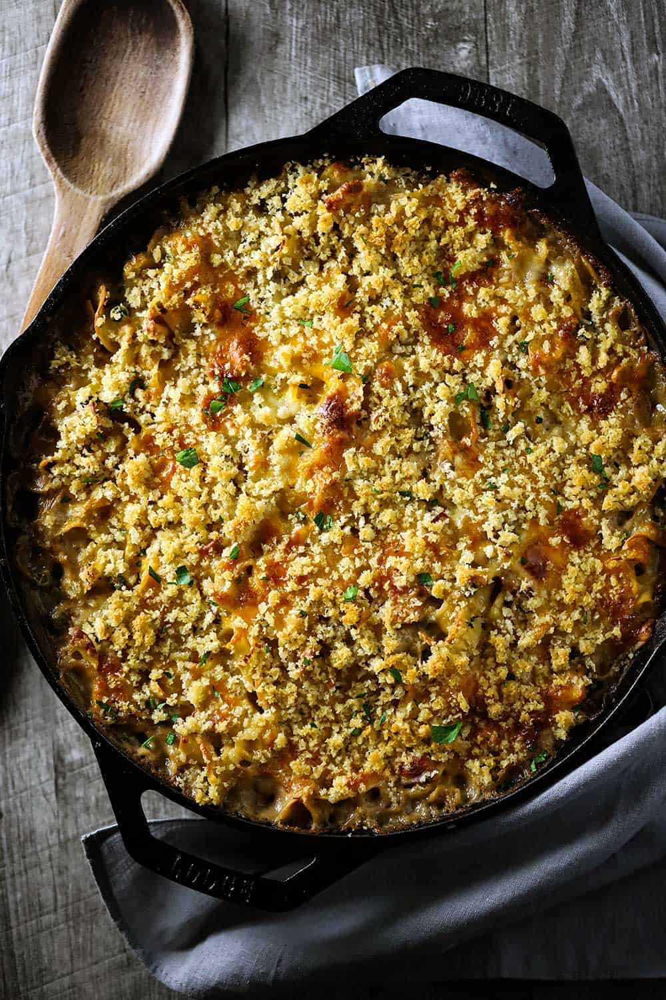

Tuna Cassarole

Description
This hearty and rich cassarole is just what is called for on a cold winter's day. Filling and
delicious, you'll have everyone reaching for more once they've licked their plates clean! Tuna
Cassarole is easy to prepare, making it an ideal for throwing together after a busy day.
Ingredients
- 1 (12oz) package egg noodles
- 1/4 cup chopped onion
- 2 cups shredded Cheddar cheese
- 1 cup frozen green peas
- 2 (5oz) cans tuna, drained
- 2 (10.75oz) ans condensed cream of mushroom soup
- 1/2 (4.5oz) can sliced mushroom
- 1 cup crushed potato chips
Method
- Bring a large pot of lightly salted water to a boil. Cook pasta in boiling water for
8 to 10 minutes, or until al dente; drain
- Prehat oven to 425 degrees F (220 degrees C)
- In a large bowl, thoroughly mix noodles, onion, 1 cup cheese, peas, tuna, soup and
mushrooms. Transfer to a 9x13 inch baking dish, and top with potato chip crumbs and
remaining 1 cup cheese.
- Bake for 15 to 20 minutes in a preheated oven, or until cheese is bubbly
Back